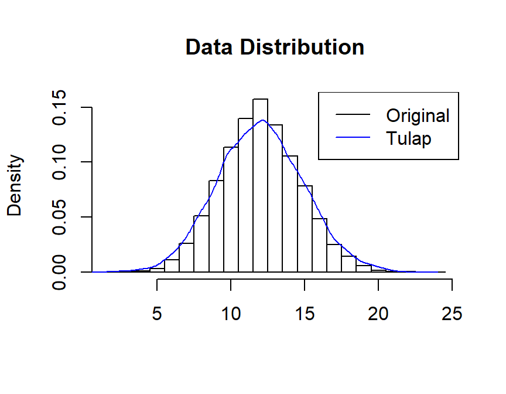
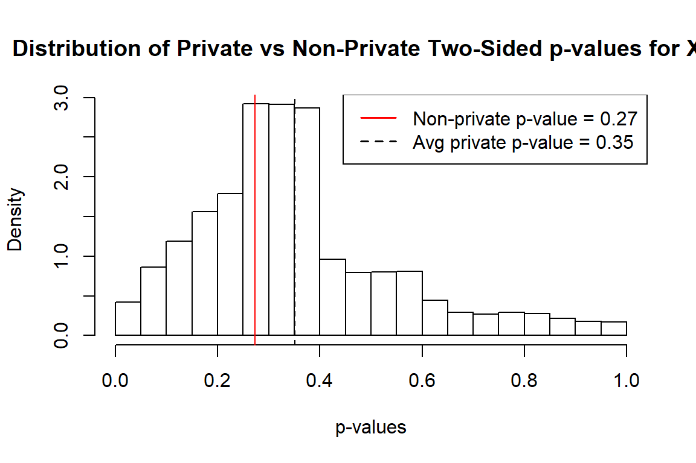

binomialDP: Differentially Private Inference for Binomial Data
binomialDP.RmdbinomialDP package aids the process of analyzing differentially private (DP) data by offering a tool to perform statistical inference on differentially private binomial data. This package includes functions for the Tulap distributions, DP-UMP tests, private p-values, and private confidence intervals for binomial data.
1. The Truncated-Uniform-Laplace (Tulap) Distrubution
The distribution \(\small Tulap(m, b, 0)\) is obtained by adding discrete Laplace noise \(\small L \sim DLap(e^{-\epsilon})\) and continuous uniform noise \(\small U \sim Unif(-1/2, 1/2)\) to the value m. The distribution \(\small Tulap(m,b,q)\) is obtained by truncating between the \(\small (q/2)^{th}\) and the \(\small (1-q/2)^{th}\) quantiles of the \(\small Tulap(m,b,0)\) distribution.
Similar to other distribution functions, the ptulap() function gives the distribution function, and rtulap() generates random sample from this distribution. For example, to sample 10,000 observations from Tulap distribution, with the median of 30, \(\small b = e^{-1}\), and \(\small q = 0.06\):
library(binomialDP) #> binomialDP: Differentially Private Inference for Binomial Data #> To get started, use help(package = 'binomialDP'). #> For citation information, use citation('binomialDP'). set.seed(1001) rand = rtulap(n = 10000, m = 30, b = exp(-1), q = 0.06) plot(density(rand), main = "Random Sample of 10000 \n from Tulap Distribution", xlab = "Value")
The figure confirms that a Tulap random variable is continuous and symmetric around the median. When q = 0, the distribution is not truncated.
2. Simulated Data
First, we obtain the original data set by sampling from the binomial distribution with rbinom(). Then, we make it differentially private by adding noise from the Tulap distribution through the function rtulap(). The latter data is the data we will perform statistical testing on.
Let \(\small X \sim Bin(n,\theta)\) where \(\small n = 30\) and \(\small \theta = 0.4\), but the value of \(\small \theta\) is supposed to be unknown. Also, with \(\small \epsilon = 1\) and \(\small \delta = 0.01\), we obtain: \[\small b = e^{-\epsilon} = e^{-1} ~~~~~~~~~~~~~~~~~~ q = \frac{2\delta b}{1-b+2\delta b} = \frac{2(0.01)e^{-1}}{1-e^{-1}+2(0.01)e^{-1}}\]
We obtain the differentially private binomial data \(\small Z\) by adding noise from \(\small Tulap(0,b,q)\) distribution to the original data. \(\small Z|X\sim Tulap(X,b,q)\).
set.seed(1001) #set up the parameters n = 30 #number of trials truth = 0.4 #true theta reps = 10000 #sample size ep = 1 #epsilon de = 0.01 #delta b = exp(-ep) #b q = 2*de*b/(1-b+2*de*b) #q alpha = 0.05 #level alpha #create the orginal data though binomial simulation X = rbinom(n = reps, size = n, prob = truth) #add Tulap noise to the original #perform statistical testing on this data Z = rep(NA, length(X)) Z = X + rtulap(n = reps, m = 0, b = b, q = q)
The summary of the first 10 observations from \(\small X\) and \(\small Z\) is as follows:
| X | 18.0 | 11.0 | 11.0 | 11.00 | 11.00 | 15.0 | 6.00 | 8.00 | 10.0 | 14.0 |
| Z | 18.7 | 10.6 | 12.9 | 9.12 | 9.88 | 15.2 | 6.14 | 8.41 | 10.5 | 11.9 |
The plot of the distribution of \(X\) and \(Z\) is as below: 
3. Differentially Private Uniformly Most Powerful Tests (DP-UMP)
3.1. Simple and One-Sided DP-UMP Tests
For example, to calculate the one-sided left DP-UMP test for \(\small H_0: \theta \le 0.4\) against \(\small H_1: \theta > 0.4\):
leftUMP = umpLeft(theta = 0.4, size = 10, alpha = 0.05, epsilon = ep, delta = de) rightUMP = umpRight(theta = 0.4, size = 10, alpha = 0.05, epsilon = ep, delta = de)

\(\small \Phi(x)\) represents the probability of rejecting the null hypothesis when observing \(X=x\).Unlike in the non-private setting where the test either results in rejection or acceptance, the randomness of the test in this case preserves privacy.
As expected, the power of the left UMP is 0.05.
3.2. Unbiased Two-Sided DP-UMP Tests
Following up from the previous example, we calculate the unbiased two-sided DP-UMP for \(\small H_0: \theta= 0.4\) against \(\small H_1: \theta \neq 0.4\).
twoUMP = UMPU(theta = 0.4, size = 10, alpha = 0.05, epsilon = ep, delta = de)
3.3. Asymptotically Unbiased Two-Sided DP-UMP Tests
numpu = umpuApprox(theta = 0.4, size = 10, alpha = 0.05, epsilon = ep, delta = de)
4. p-Values
4.1. UMP One-Sided p-Values
We continue to use the noisy data \(\small Z\) to test the hypothesis \(\small H_0: \theta = 0.4\) against \(\small H_A: \theta < 0.4\) with function pvalLeft and against \(\small H_A: \theta > 0.4\) with function pvalRight. As shown in the Data Simulation section, the true data \(\small X\) is simulated under Binomial distristribution with \(\small \theta = 0.4\), which is unknown in the real setting, and the noisy data \(\small Z\) is obtained by adding \(\small Tulap(0,b,q)\) noise to \(\small X\).
pvalL = pvalLeft(Z, size = n, theta = 0.4, b = b, q = q) pvalR = pvalRight(Z, size = n, theta = 0.4, b = b, q = q)
The p-values for the first 10 observations in \(\small Z\) is summarized below:
| Z | 18.70 | 10.65 | 12.89 | 9.12 | 9.88 | 15.15 | 6.14 | 8.41 | 10.5 | 11.87 |
| Left private p-value | 0.99 | 0.33 | 0.62 | 0.17 | 0.24 | 0.85 | 0.02 | 0.11 | 0.3 | 0.49 |
| Right private p-value | 0.01 | 0.67 | 0.38 | 0.83 | 0.76 | 0.15 | 0.98 | 0.89 | 0.7 | 0.51 |
Since the true value \(\small \theta= 0.4\) is in the null hypothesis, this confirms that the p-value has calibrated type I error:
4.2. Asymptotically Unbiased DP p-Values
Following up from the example above, we now test \(\small H_0:\theta = 0.5\) versus \(\small H_A: \theta \neq 0.5\) at level \(\small \alpha = 0.05\). This test is an approximation to the DP-UMPU, with calibrated type I error, but is only asymptotically unbiased.
upval = pvalTwoSide(Z, size = n, theta = 0.5, b = b, q = q)
| Z | 18.70 | 10.65 | 12.89 | 9.12 | 9.88 | 15.15 | 6.1 | 8.41 | 10.46 | 11.9 |
| P-Value | 0.22 | 0.15 | 0.49 | 0.05 | 0.09 | 0.96 | 0.0 | 0.03 | 0.13 | 0.3 |
Thus, we only have enough evidence to reject the null hypothesis at level \(\small \alpha = 0.05\) with the 4th, 7th and 8th observation.
4.3. Comparing Private and Non-Private p-values
We first calculate the non-private p-values using the first observation in the original data \(\small X\):
Then we add Tulap noise to the true data and calculate the private p-values 100,000 times. The distribution of private p-values compared to the non-private one is shown in the plot below. The randomness of private p-values helps preserve privacy.
#calculate private pvalue of the first observation 100000 times tulap = rep(X[1], 100000) + rtulap(n = 100000, m = 0, b = b, q = q) ppval = pvalRight(tulap, n, 0.5, b, q) #plot the distriution of private p-values vs. non-private p-value hist(ppval, xlim = c(0,1), main = "Distribution of Private vs Non-Private p-values for X[1]", xlab = "p-values") abline(v = pR, col = "red") abline(v = mean(ppval), lty = 2) legend("topright", legend=c(paste("Non-private p-value =", round(pR,2)), paste("Avg private p-value =", round(mean(ppval), 2))), col=c("red", "black"), lty=1:2, lwd = 1.5)
Similarly, we continue to compare private vs. non private two-sided p-values:
#calculate non-private two-sided p-values p2 = 2*pnorm(abs(x), mean = 0, sd = 1, lower.tail = FALSE) #calculate private two-sided p-values ppval2 = pvalTwoSide(tulap, n, 0.5, b, q) #plot and compare hist(ppval2, xlim = c(0,1), main = "Distribution of Private vs Non-Private Two-Sided p-values for X[1]", xlab = "p-values", probability = TRUE) abline(v = p2, col = "red") abline(v = mean(ppval2), lty = 2) legend("topright", legend=c(paste("Non-private p-value =", round(p2,2)), paste("Avg private p-value =", round(mean(ppval2), 2))), col=c("red", "black"), lty=1:2, lwd = 1.5)

5. Confidence Intervals
5.1. One-sided Confidence Intervals
Here, we know the value of the first observation in X is 18 and its corresponding \(\small \theta\) is 0.6. However, in the real setting, we only know the value of the first observation in the differentially private data Z is 18.4243, and we want to estimate the \(\small 95\%\) confidence interval of \(\small \theta\).
CILower(alpha = 0.05, Z[1], size = n, b = b, q = q) #> [1] 0.46 CIUpper(alpha = 0.05, Z[1], size = n, b = b, q = q) #> [1] 0.77
The upper and lower CI for \(\small \theta\) at level \(\small \alpha=0.05\) given the first observation of Z is \(\small(0.45,1)\) and \(\small (0, 0.76)\), respectively. Similarly, we obtain the lower bounds of the one-sided confidence intervals from the first 10 observations from the data:
| Z | 18.70 | 10.65 | 12.89 | 9.12 | 9.88 | 15.15 | 6.14 | 8.41 | 10.46 | 11.87 |
| Lower Bound | 0.46 | 0.21 | 0.27 | 0.17 | 0.19 | 0.34 | 0.09 | 0.15 | 0.21 | 0.24 |
| Upper Bound | 1.00 | 1.00 | 1.00 | 1.00 | 1.00 | 1.00 | 1.00 | 1.00 | 1.00 | 1.00 |
5.2. Asymptotically Unbiased Two-sided Confidence Intervals
CINearlyUnbiased() computes the asymptotically unbiased two-sided confidence interval for \(\small \theta\) with specified level of \(\small \alpha\). This confidence interval is typically more accurate than the simple two-sided confidence interval. For example, to calculate the two-sided confidence interval of \(\small \theta\) of the first observation in Z:
CITwoSide(alpha = 0.05, Z[1], size = n, b = b, q = q) #> [1] 0.43 0.79
Similarly, we obtain the \(\small 95\%\) two-sided confidence intervals for the first 10 observations in Z:
CITwoUpper = rep(NA, 10) CITwoLower = rep(NA, 10) for (i in 1:10){ CITwoLower[i] = CITwoSide(alpha = 0.05, Z[i], size = n, b = b, q = q)[1] CITwoUpper[i] = CITwoSide(alpha = 0.05, Z[i], size = n, b = b, q = q)[2] }
| Z | 18.70 | 10.65 | 12.89 | 9.12 | 9.88 | 15.15 | 6.14 | 8.41 | 10.46 | 11.87 |
| Lower Bound | 0.43 | 0.19 | 0.25 | 0.15 | 0.17 | 0.32 | 0.08 | 0.13 | 0.19 | 0.22 |
| Upper Bound | 0.79 | 0.55 | 0.62 | 0.50 | 0.53 | 0.69 | 0.40 | 0.48 | 0.54 | 0.59 |
6. Comparing Differentially Private and Non-Private Population Proportion Test
#private test on noisy sample Z[1] dpPropTest(Z[1], size = n, theta = 0.5, b = b, q = q, "greater", 0.05) #> Ha: True theta greater than 0.5 #> Data 18.70 #> Size 30.00 #> Sample Estimates 0.62 #> p-value 0.11 #> Lower Limit 0.46 #> Upper Limit 1.00 #non-private test on real data X[1] prop.test(X[1], n, p = 0.5, "greater", conf.level = 0.95, correct = FALSE) #> #> 1-sample proportions test without continuity correction #> #> data: X[1] out of n, null probability 0.5 #> X-squared = 1, df = 1, p-value = 0.1 #> alternative hypothesis: true p is greater than 0.5 #> 95 percent confidence interval: #> 0.45 1.00 #> sample estimates: #> p #> 0.6
7. References
Awan, Jordan Alexander, and Aleksandra Slavkovic. 2020. “Differentially Private Inference for Binomial Data”. Journal of Privacy and Confidentiality 10 (1). https://doi.org/10.29012/jpc.725.
Awan, Jordan, and Aleksandra Slavković. “Differentially private uniformly most powerful tests for binomial data.” In Advances in Neural Information Processing Systems, pp. 4208-4218. 2018.